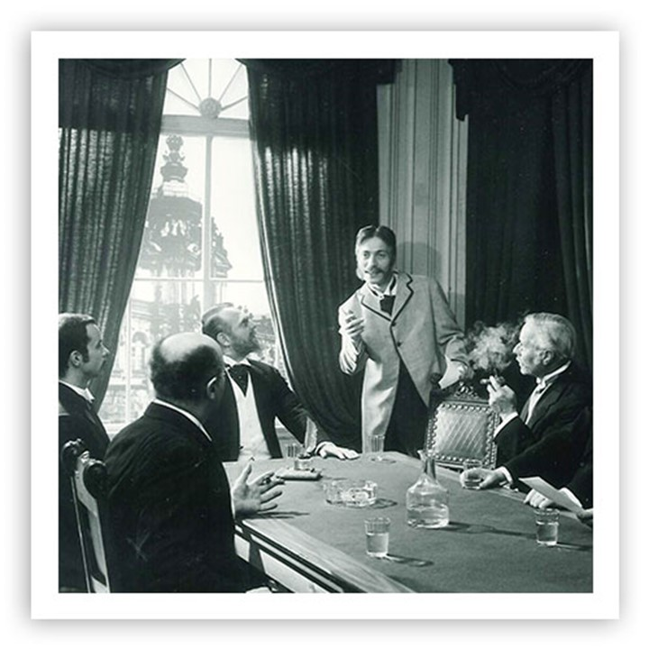

Аптечные корни
Фармацевты объединяются, чтобы производить препараты по единым стандартам, в одинаковой упаковке и по единой цене.
STADA 1895-2022
Более 130 лет STADA развивается от объединения дальновидных фармацевтов до международной фармацевтической группы, сохраняя фокус на качестве, доступности и заботе о здоровье людей.

Фармацевты объединяются, чтобы производить препараты по единым стандартам, в одинаковой упаковке и по единой цене.
STADA расширяет продуктовую линию дженериками и закладывает основу будущего международного роста.
Акции STADA впервые допускаются к официальным торгам на биржах Франкфурта и Дюссельдорфа.
Компания расширяет производство, Specialty-направление, биосимиляры и публикует первый глобальный отчет об устойчивом развитии.
Journey through time
Хронология основана на материалах глобального сайта STADA и адаптирована для страницы STADA Kazakhstan.
Фармацевты объединяются, чтобы добиться большего вместе: препараты производятся по одинаковым правилам, упаковываются единообразно и продаются по единой цене.
14 марта 1895 года считается отправной точкой STADA: фармацевты в Берлине, Дрездене, Вюрцбурге, Дармштадте и других городах начинают совместно производить препараты.
Немецкая ассоциация фармацевтов устанавливает правила самостоятельного производства фармацевтических специальностей: от выпуска и маркировки до упаковки и цены.
Создается специализированная компания Немецкой ассоциации фармацевтов, дающая участникам возможность выпускать препараты по идентичным требованиям.
После перехода ассоциации в профессиональное сообщество St.d.A специализированная компания становится отделом собственных препаратов Немецкой ассоциации фармацевтов.
После Второй мировой войны STADA становится ассоциативной торговой маркой, а бизнес перезапускается через две кооперативные структуры - Север и Юг.
Аббревиатура St.d.A превращается в зарегистрированный знак STADA и становится общим названием для аптечных препаратов, выпускаемых по стандартным формулам.
STADA открывает филиал в Мюнхене. После бомбардировок 1944 года офисы переносят в Галле, но к концу войны работа прекращается.
STADA заново создается в бывшей ФРГ как два кооператива: STADA North в Эссене и STADA South в Тюбингене, с фокусом на продуктах для самолечения.
Две послевоенные кооперативные организации объединяются, а площадка в Бад-Фильбеле/Дортельвайле становится основой для будущего промышленного роста.
STADA North и STADA South объединяются в Stada, Standardpräparate Deutscher Apotheken eGmbH, компания переезжает во Франкфурт-на-Майне, а товарный знак STADA регистрируется.
Компания приобретает помещения рядом с Франкфуртом, где постепенно формируется современная фармацевтическая производственная база.
Представительное собрание решает, что препараты STADA могут производиться не только в аптеках, но и централизованно в Дортельвайле.
STADA начинает оптовую торговлю собственными препаратами, меняет правовую форму и сохраняет тесную связь с фармацевтами.
Кооператив становится корпорацией, чтобы привлекать больше капитала и устойчиво развиваться; на этом этапе акции доступны только фармацевтам.
Создаются NIDDAPHARM GmbH и STADA-CHEMIE GmbH, также STADA приобретает UZARA-Werk GmbH.
Решение развивать дженерики становится ключевым: компания перестраивается, быстро растет и выходит на зарубежные рынки.
STADA расширяет линейку дженериками, учреждает STADAPHARM GmbH, получает первые лицензии; одним из успешных продуктов становится Nifedipin STADA.
С приобретением швейцарской Helvepharm AG STADA впервые выходит за рубеж. Позже появляются STADA GmbH Austria, Eurogenerics SA в Бельгии и Centrafarm BV в Нидерландах.
STADA начинает деятельность в Азии через STADA Pharmaceuticals (Asia) Ltd. в Гонконге.
К 100-летию бизнес активно растет, STADA входит в топ-10 немецкой отрасли по продажам и продолжает международную экспансию.
Впервые акционерами STADA могут стать не только фармацевты и сотрудники компании, но и другие инвесторы.
STADA реорганизуется в средний холдинг в Бад-Фильбеле; STADAPharm GmbH и STADA OTC Arzneimittel GmbH берут на себя ключевой маркетинг рецептурных и OTC-препаратов.
STADA приобретает ALIUD PHARMA GmbH как вторую немецкую дженериковую линию и расширяется во Франции и Чехии.
29 октября акции STADA впервые допускаются к официальной торговле на фондовых биржах Франкфурта и Дюссельдорфа.
Завершается IPO с именными акциями, STADA приобретает активы в Дании, Onkologika и пакет рецептурных брендов Fresenius.
Международное развитие ускоряется: запускается STADA Asiatic Co. Inc. в Бангкоке, инвестиции в Ciclum Farma в Испании и EG S.p.A в Италии.
STADA покупает Clonmel Healthcare Ltd., лидера ирландского рынка дженериков, и проводит дробление обыкновенных и привилегированных акций 1:10.
STADA входит в MDAX и Euro Stoxx 600, начинает разработку биодженериков и усиливает международное присутствие, включая стратегический вход в Россию.
Запускается разработка биодженериков, расширяется азиатский бизнес, преодолен рубеж выручки 500 млн евро, привилегированные акции конвертируются в обыкновенные, STADA включается в MDAX.
Компания выходит в США через STADA Inc., усиливает позиции в Испании и Италии, покупает локальные бренды и включается в индекс EuroSTOXX 600.
STADA инвестирует в New Pharmajani в Италии, вместе с Europa Fachhochschule Fresenius объявляет профессорскую кафедру health management, приобретает Schein Pharmaceuticals UK и брендовый пакет redinomedica.
Проводится фактическое дробление акций 1:1, усиливается брендовый портфель в Италии, а покупка около 97,5% Nizhpharm становится важным шагом в России.
STADA приобретает Ciclum Farma в Португалии, 58% Beijing Center-Lab Pharmaceutical Company в Китае и пакет из 11 европейских брендов, включая Mobilat.
Компания приобретает стратегически важный Hemofarm, запускает первый биосимиляр группы и размещает первый корпоративный bond.
STADA выходит из бизнеса в США и приобретает сербскую Hemofarm A.D. в Вршаце.
STADA усиливает присутствие в России через MAKIZ Group и приобретает британскую Forum Bioscience Holdings Ltd.
Немецкая cell pharm представляет первый биосимиляр STADA для лечения анемии при хронической почечной недостаточности и химиотерапии; в Германии препарат продается как Silapo.
STADA успешно размещает первый корпоративный bond и запускает программу эффективности STADA - build the future.
Компания активно приобретает брендовые продукты, завершает программу эффективности раньше срока и покупает британского OTC-производителя Thornton & Ross.
STADA приобретает Cetraben, начинает разработку двух биосимиляров с Gedeon Richter и покупает портфель Grünenthal для Восточной Европы и Ближнего Востока.
Покупается портфель Grünenthal для рынков ЕС в Центральной Европе, приобретается швейцарская Spirig Pharma AG, создается дочерняя компания в Австралии, а в рамках программы эффективности продаются отдельные производственные площадки.
STADA входит в персонализированную терапию, первой в Германии внедряет 2D-штрихкод, приобретает Thornton & Ross, создает IT shared service center в Сербии, лицензирует Grastofil, расширяется в Мьянме и размещает второй corporate bond.
Открывается логистический центр в Дубае, STADA впервые превышает отметку 2 млрд евро продаж, приобретает Aqualor для России и права на Flexitol для Великобритании и Ирландии.
STADA отмечает 120 лет, расширяет STADA Diagnostik быстрым тестом на Ebola, лицензирует Pegfilgrastim для Европы, приобретает SCIOTEC и аргентинскую Laboratorio Vannier, а сотрудничество с CROMA-PHARMA усиливает aesthetics-направление.
STADA усиливает международные брендовые продукты, биосимиляры, specialty-направление и устойчивое развитие.
Начинается сфокусированная интернационализация успешных Branded Products.
Успешно проходит добровольное публичное предложение о поглощении Bain Capital и Cinven; доля владения достигает примерно 65%.
STADA возвращает права на Ladival, приобретает EMEA-права на Nizoral, становится мажоритарным акционером BIOCEUTICALS, а Peter Goldschmidt становится CEO и запускает процесс корпоративной культуры; объявлен делистинг.
Компания приобретает OTC-портфель GSK, запускает Movymia и Bortezomib STADA, начинает продажи Nizoral в EMEA, покупает Walmark, инвестирует в OTC-портфель Takeda в России/СНГ, заключает партнерство с Alvotech и приобретает бизнес Biopharma Ukraine.
STADA заключает стратегическое партнерство с Alvotech по семи биосимилярам для Европы и приобретает Lobsor Pharmaceuticals вместе с правами на препарат для болезни Паркинсона.
Запускается новый продукт с современной помповой технологией для поздней стадии болезни Паркинсона, oncology-биосимиляр bevacizumab, приобретаются 16 consumer healthcare брендов Sanofi, а с Calliditas Therapeutics заключается партнерство по IgA-нефропатии в Европе.
STADA расширяет производственную сеть объектом стоимостью более 50 млн евро в Румынии, запускает Kinpeygo, выводит высококонцентрированный adalimumab biosimilar в Европе, публикует первый глобальный Sustainability Report и входит в топ-10% самых устойчивых фармкомпаний.